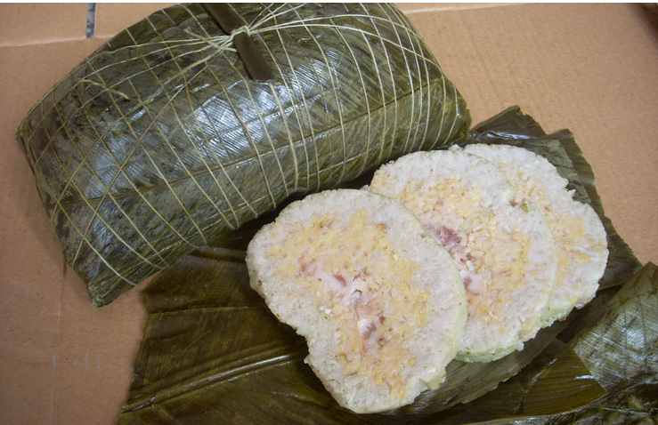

灵山大粽
发布于：2017-12-30 信息来源：钦州旅游网
粽心肉是用新鲜的五花腩猪肉腌制成。腌制时，先把新鲜肥猪肉切成长方形，每块重3两左右，用上好米酒、姜末葱末、精盐腌渍一至两天。传统的粽心用料是猪肉，现在随着生活水平的提高，粽心的用料变得丰富，猪肉（五花腩）、排骨、板栗、鸡、猪脚等都是粽心的上乘选料。
糯米洗净淘沙后，按500克糯米放入精盐8至10克捞匀调味。粽叶最好选用又宽又大的，先把粽叶放入锅头加水煮沸，然后清洗干净，方可用来包粽。包粽时，先把粽叶叠好放平，铺上250克糯米和去皮淘洗干净的绿豆及粽心肉。然后再放上250克糯米覆盖，用粽叶包成长方梯形，再用线绳捆好。 粽子包好后，当天要用大锅煮7至8个小时。
煲粽时，要注意火候，开始时用猛火煮至水沸腾，然后用慢火，保持锅内的水滚开为好，在煲的过程中不断加水，防止烧焦。煲3至4小时后，要翻粽，把锅底的粽调上来，把上面的粽翻入锅底。
